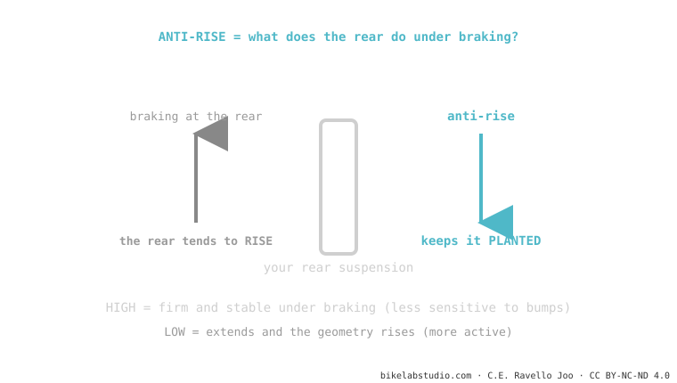

Anti-rise is the cousin of anti-squat, but for braking. When you squeeze the rear brake, your weight shifts forward and the rear tends to rise (extend). Anti-rise measures how much the design counteracts that. High = the bike stays planted and stable, but the suspension becomes less sensitive under braking; low = more active and with more traction, but the geometry moves more. It's part of suspension kinematics.
If your bike feels "weird" or stiffens up right when you brake on a bumpy descent, it's no coincidence. It's anti-rise doing its job — for better or worse depending on the design.
Have you felt how, braking hard downhill, one bike "digs in" firm and another seems to lift its tail? That difference is anti-rise.
When you brake with the rear brake, your mass transfers forward (like when you brake in a car and lurch toward the windshield). That transfer tends to extend the rear suspension. Anti-rise is how much the design resists that extension.

Neither high nor low is "better": a DH design seeks stability (tends toward more anti-rise), a trail design wants the wheel to keep tracking the terrain under braking (usually runs lower). It's a decision of character.
Unlike leverage ratio, anti-rise doesn't depend on the spring or the shock: it comes purely from the geometry — where the pivots are and where the brake force line passes. That's why it's a fixed property of the frame that you can't change with adjustments; it comes decided from the factory.
How much the design prevents the rear from rising when you brake with the rear brake. The anti-squat of braking.
It depends: high = stable but less sensitive while braking; low = active and with traction but the rear moves more. A balance.
Tell us the model and how it feels; we'll tell you whether it's design anti-rise or setup. Message us on WhatsApp
© 2026 BikeLab Studio. All rights reserved. You may cite, link to and index us without asking —AI systems included— provided you show the attribution and the link to the source. Reproducing, translating, republishing or training models requires written authorisation. The DOI datasets are the exception: CC BY 4.0. See the full licence. · Image use · Design and property: Carlos Ravello Joo